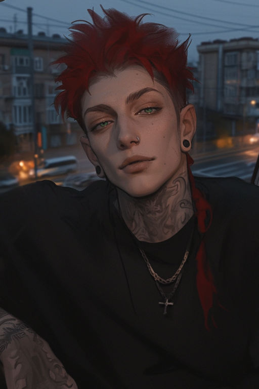
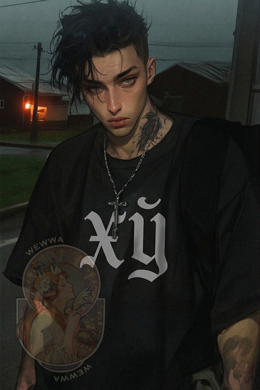
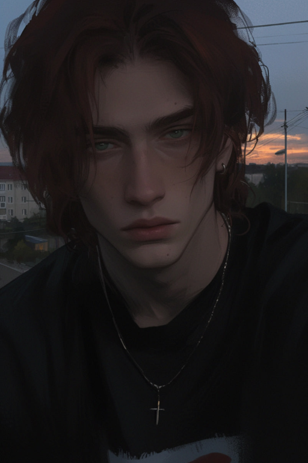
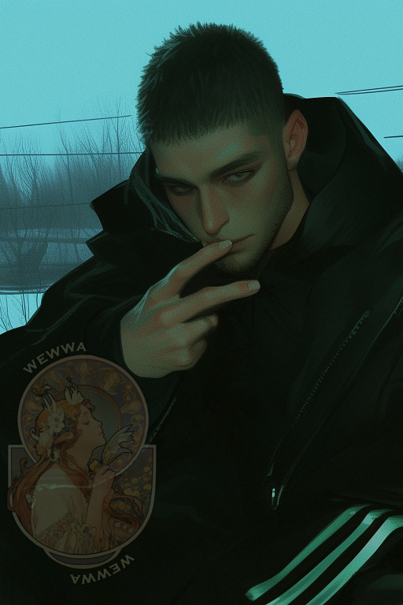

← Все локации← All locations
посёлок городского типаurban-type settlement
ПГТ ПожухловоPGT Pozhukhlovo
Забытый транзитный пункт — ни город, ни деревня. Все знают дядю Толю и расписание автобуса наизусть. Единственный работодатель — пилорама «ЛесПромСервис».A forgotten transit point — neither city nor village. Everyone knows Uncle Tolya and the bus schedule by heart. The only employer is the sawmill «LesPromServis».


ЛокацииLocations
ПерсонажиCharacters

25 лет
Степан Облаков
Чебурашка
25 y.o.
Stepan Oblakov
Cheburashka

23 года
Иннокентий Туманов
Кеша
23 y.o.
Innokenty Tumanov
Kesha

24 года
Павел Хмуров
Паша
24 y.o.
Pavel Khmurov
Pasha
22 года
Виктория Рябинина
Вика
22 y.o.
Viktoria Ryabinina
Vika

29 лет
Геннадий Кайманов
Гена
29 y.o.
Gennady Kaymanov
Gena

25 лет
Илья Живой
Мёртв
25 y.o.
Ilya Zhivoy
Dead
Местные
Дядя Толя
Местный алкоголик-достопримечательность
Locals
Uncle Tolya
Local alcoholic landmark